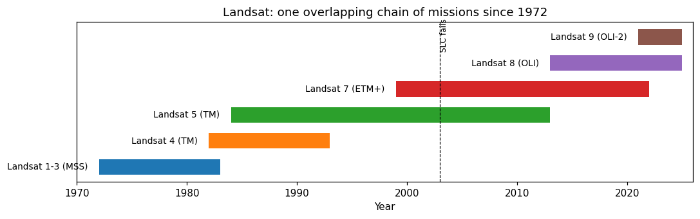
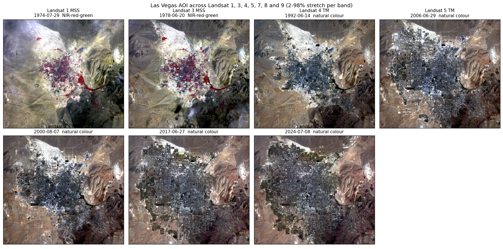
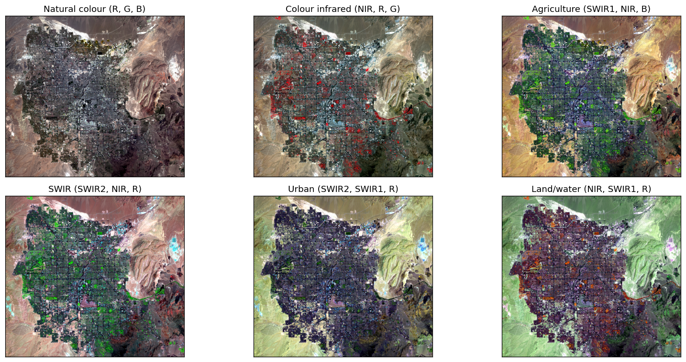
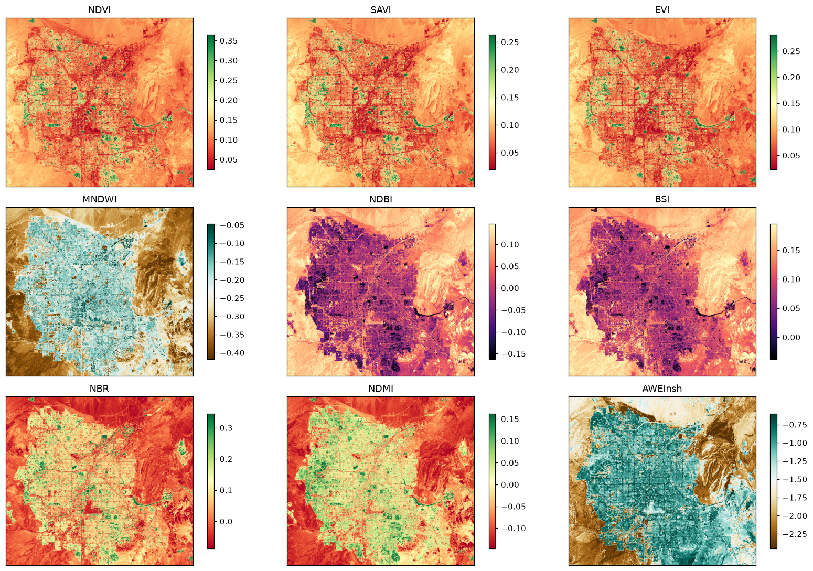
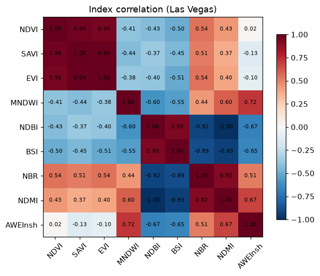
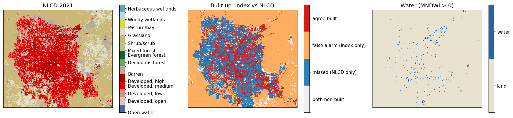
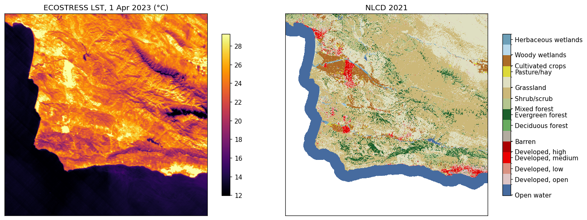
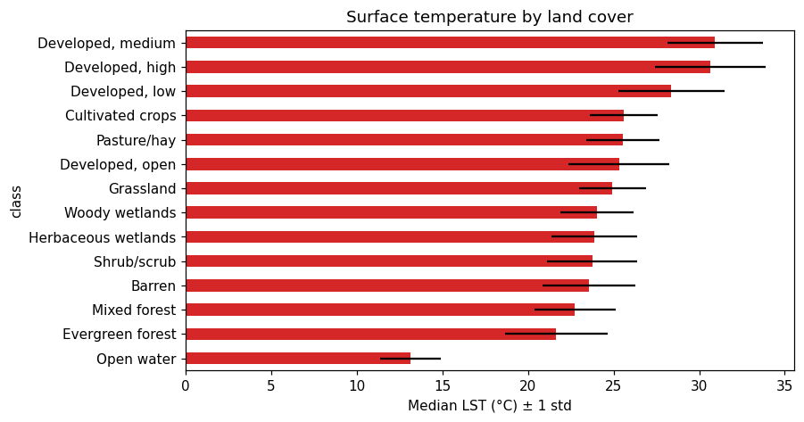

Landsat is the longest continuous record of Earth’s land surface from space: from Landsat 1 in 1972 to Landsat 9 today, at 30 m resolution with free, consistently calibrated data.
Overview
This module covers the Landsat archive, Collection 2 products, scale factors, QA decoding, composites, spectral indices, surface temperature, and two real multi-decade change analyses.
Core concepts
Learning objectives
Know the Landsat missions, sensors, band layouts and Collection 2 processing levels.
Apply Collection 2 Level-2 scale factors for reflectance and surface temperature.
Decode QA_PIXEL bit flags and build cloud masks.
Make and interpret natural- and false-colour composites.
Compute, compare and validate spectral indices for vegetation, water and built-up land.
Understand land surface temperature retrieval and analyse a real LST product.
Analyse multi-decade change from real Landsat time series in the Pucallpa and Bangladesh delta capstones.
Contents
The program
Platforms
Sensors
Spectral bands
Data products
Applications
Where to get the data
Data
Setup
The Landsat program and Collection 2
Loading Landsat data
Scale factors
Decoding QA_PIXEL
Colour composites
Spectral indices
Validating index-based water and built-up maps
Land surface temperature
Summary, exercises and references
Two multi-decade case studies are separate capstones:
USGS operates them, processes the data, and maintains the archive at the EROS Center in Sioux Falls, South Dakota.
First satellite. Landsat 1 was launched on 23 July 1972 as ERTS-1 (Earth Resources Technology Satellite) and was renamed Landsat in 1975.
Commercialization period (1985 to 1992). Operations moved to a private company, EOSAT. Scene prices rose to several thousand dollars, which sharply limited use. The Land Remote Sensing Policy Act of 1992 returned Landsat to government management.
Open data policy (2008). USGS made the entire archive free. This changed land-change science: downloads went from a few thousand scenes a year to millions, and global wall-to-wall analyses became possible.
Collections.
Collection 1 was released in 2016.
Collection 2, released in December 2020, is the current standard. It improved geolocation and added global Level-2 surface reflectance and surface temperature.
Recent milestones
Landsat 7 acquired science data until 19 January 2024 and was decommissioned on 4 June 2025, after 26 years in orbit.
Landsat 7 had already moved to a lower orbit (697 km) in 2022. This made room for Landsat 9 to join Landsat 8 at 705 km.
Over its lifetime, Landsat 7’s ETM+ sensor acquired more than 3.3 million scenes.
Landsat Next (future).
Planned as a constellation of three spacecraft launched together no earlier than 2030, with better spatial, spectral, and temporal resolution than Landsat 8 and 9.
Planned specifications include a 6-day revisit (versus 8 days for Landsat 8 and 9 in tandem) and about 15 times more data than Landsat 9.
The FY2026 President’s Budget restructured the mission. USGS and NASA are now looking for more affordable approaches to Landsat data continuity.
Congress’s FY2026 appropriations language differs from the budget request, so the final design and schedule remain uncertain.
As of January 2026, both Landsat 8 and Landsat 9 were in nominal operations.
Orbit (Landsat 4 to 9) - Sun-synchronous, near-polar, about 705 km altitude. - Equatorial crossing at about 10:00 a.m. local time (descending node). - 16-day repeat cycle per satellite. - 8-day combined revisit for Landsat 8 and 9, which are offset by 8 days. - 185 km swath; one scene is about 185 × 180 km. - Scenes are referenced by path/row on the Worldwide Reference System-2 (WRS-2). - Landsat 1 to 3 flew at about 917 km with an 18-day repeat and used WRS-1.
Sensors
Return Beam Vidicon (RBV), Landsat 1 to 3. A television-camera system with three broad visible/NIR channels. It was secondary to the MSS and is rarely used today.
Multispectral Scanner (MSS), Landsat 1 to 5.
4 bands: green, red, and two NIR.
About 79 m resolution, resampled to 60 m.
6-bit radiometry.
Thematic Mapper (TM), Landsat 4 to 5.
7 bands, adding blue, SWIR, and thermal.
30 m resolution (thermal 120 m).
8-bit radiometry.
Enhanced Thematic Mapper Plus (ETM+), Landsat 7.
TM bands plus a 15 m panchromatic band; thermal at 60 m.
Landsat 7 was the first Landsat with an onboard data recorder.
SLC-off gaps: after the Scan Line Corrector failed in 2003, each scene has wedge-shaped strips of missing data and keeps roughly 78% of its pixels. Gap-filling or compositing is needed.
Operational Land Imager (OLI), Landsat 8, and OLI-2, Landsat 9.
Push-broom design, which gives a better signal-to-noise ratio than the older whisk-broom scanners.
9 bands, including new coastal/aerosol and cirrus bands.
Narrower NIR band that avoids the 825 nm water-vapour absorption feature.
Radiometry: OLI collects 12-bit data; OLI-2 transmits 14-bit data.
Thermal Infrared Sensor (TIRS), Landsat 8, and TIRS-2, Landsat 9.
2 thermal bands at 100 m, resampled to 30 m.
TIRS on Landsat 8 suffers stray light, which makes Band 11 less reliable. TIRS-2 has improved baffling.
Spectral bands
Landsat 8 and 9
Band
Name
Wavelength (µm)
Resolution
Main use
B1
Coastal/aerosol
0.43 to 0.45
30 m
Coastal water, aerosols
B2
Blue
0.45 to 0.51
30 m
Bathymetry, soil vs. vegetation
B3
Green
0.53 to 0.59
30 m
Vegetation vigour, true colour
B4
Red
0.64 to 0.67
30 m
Chlorophyll absorption, NDVI
B5
NIR
0.85 to 0.88
30 m
Biomass, shorelines
B6
SWIR 1
1.57 to 1.65
30 m
Soil/vegetation moisture, snow vs. cloud
B7
SWIR 2
2.11 to 2.29
30 m
Geology, burn severity
B8
Panchromatic
0.50 to 0.68
15 m
Pan-sharpening
B9
Cirrus
1.36 to 1.38
30 m
Cirrus cloud detection
B10
TIRS 1
10.60 to 11.19
100 m (delivered at 30 m)
Surface temperature
B11
TIRS 2
11.50 to 12.51
100 m (delivered at 30 m)
Thermal (use with caution on Landsat 8)
Landsat 4, 5 and 7
Band
Name
Wavelength (µm)
Resolution
B1
Blue
0.45 to 0.52
30 m
B2
Green
0.52 to 0.60
30 m
B3
Red
0.63 to 0.69
30 m
B4
NIR
0.76 to 0.90
30 m
B5
SWIR 1
1.55 to 1.75
30 m
B6
Thermal
10.40 to 12.50
120 m (TM) / 60 m (ETM+), delivered at 30 m
B7
SWIR 2
2.08 to 2.35
30 m
B8
Panchromatic (ETM+ only)
0.52 to 0.90
15 m
Band numbering differs between generations. NIR is B4 on TM and ETM+ but B5 on OLI, and red is B3 versus B4. Map band names explicitly in code when building multi-sensor time series.
Processing levels: - L1TP: precision terrain-corrected using ground control points and a DEM. The best quality. - L1GT: systematic terrain correction only. - L1GS: systematic correction only.
Quality tiers: - Tier 1: meets geometric accuracy requirements and is suitable for time-series analysis. - Tier 2: lower geometric accuracy or heavy cloud. - Real-Time: available within hours, later reprocessed into a tier.
Level-2 science products
Surface Reflectance (SR) - Algorithms: LaSRC for Landsat 8/9; LEDAPS for Landsat 4 to 7. - Scaling: reflectance = DN × 0.0000275 − 0.2
Surface Temperature (ST) - Single-channel algorithm, using Band 10 on Landsat 8/9. - Scaling: temperature (K) = DN × 0.00341802 + 149.0
Forestry. Deforestation, disturbance and recovery (LandTrendr, CCDC algorithms), insect damage.
Water
Surface water dynamics and reservoir and lake monitoring
Water quality (turbidity, chlorophyll)
Glacier and ice-sheet change
Urban and climate
Urban expansion and impervious surfaces
Urban heat islands (thermal bands)
Land surface temperature trends
Disasters. Fire burn severity (MTBS in the U.S. uses NBR/dNBR), flood extent, volcanic and landslide mapping.
Geology and soils. Mineral and lithology mapping (SWIR), soil mapping covariates, erosion and desertification.
Environment and health
Greenness and heat exposure metrics for epidemiology
Vector habitat mapping
Wetland and mangrove change
Machine learning. Long, consistent time series support temporal deep learning and change detection. Landsat is also used in foundation-model pretraining, often together with HLS.
Where to get the data
All Landsat data are free and open, with no restrictions on use.
Platform
Notes
USGS EarthExplorer (earthexplorer.usgs.gov)
Official search and download; requires a free login
LandsatLook Viewer
Quick browsing and simple downloads
USGS M2M API
Programmatic bulk ordering
AWS Open Data
s3://usgs-landsat Collection 2 COGs (requester pays) with a STAC API
Google Earth Engine
e.g. LANDSAT/LC09/C02/T1_L2, LANDSAT/LC08/C02/T1_L2, LANDSAT/LE07/C02/T1_L2, LANDSAT/LT05/C02/T1_L2
Microsoft Planetary Computer
landsat-c2-l2 and landsat-c2-l1 (includes MSS) through STAC
NASA Earthdata / LP DAAC
HLS (HLSL30, HLSS30)
USGS EROS Science Processing (ESPA)
On-demand indices and reprojection
Python tools: - pystac-client with odc-stac or stackstac: STAC search and xarray cubes - earthengine-api and geemap: work in Google Earth Engine - landsatxplore and usgs-m2m: download from USGS - rasterio, rioxarray, xarray: reading and analysis - spectral and spyndex: spectral indices
Practical tips: - Use Tier 1 Level-2 data for time series. - Mask with the QA_PIXEL bits. - Apply the Collection 2 scale factors. - Cross-calibrate TM/ETM+ against OLI reflectance before trend analysis. OLI NDVI tends to run slightly higher, and published coefficients such as those from Roy et al. (2016) correct for this.
Downloaded live with get_images in the Loading Landsat data section: path 39 row 35, 8 July 2024, Las Vegas, native 30 m, 7 reflective + 1 thermal band
Landsat 1, 3, 4, 5, 7, 8 and 9
One clear summer scene each for the same Las Vegas box, downloaded in the Loading Landsat data section (Data/08_remote_sensing/08_02_optical/landsat_missions)
NLCD 2021 (windowed read)
USGS land cover, used to validate index-based maps
ecostress_lst.tif
ECOSTRESS L2T land surface temperature (70 m), southern California, 1 April 2023
Setup
Installation. This notebook needs installation option 5 (core, spatial analysis, spatial statistics, geostatistics and remote sensing): pip install "geolattice[remote-sensing]". See “Installation options” in the GeoLattice README.
Code
import warnings # warning controlwarnings.filterwarnings("ignore", category=UserWarning) # hide routine library warningswarnings.filterwarnings("ignore", category=RuntimeWarning) # e.g. "mean of empty slice" in all-NaN areasimport json # read STAC item metadataimport numpy as np # arraysimport pandas as pd # tablesimport xarray as xr # labelled rastersimport rasterio # raster readingimport matplotlib.pyplot as plt # figuresimport geolattice.rsense as rs # GeoLattice remote sensingfrom geolattice.rsense.optical.sensors import landsat # Landsat band tables, scale factors and QA decodingfrom geolattice.rsense.get_images import get_images, search_images # search and download satellite imagesfrom geolattice.network import is_online # internet checkrasterio.Env(CPL_LOG="/dev/null").__enter__() # silence GDAL log messages for the whole sessionplt.rcParams.update({"figure.dpi": 110}) # figure resolutionONLINE = is_online("https://planetarycomputer.microsoft.com/api/stac/v1") # can Planetary Computer be reached?# "cpu" keeps every array in this notebook on the same backend; "auto" would move real# downloads to the GPU on a CUDA machine and break code that mixes them with plain numpy.print("geolattice.rsense", rs.__version__, "| backend:", rs.set_backend("cpu"),"| Planetary Computer reachable:", ONLINE)
geolattice.rsense 0.3.49 | backend: cpu | Planetary Computer reachable: True
Code
from pathlib import Path # file pathsimport urllib.request # download files over HTTPimport os # file sizes# The notebook's data folder: ../../../../Data/08_remote_sensing/08_02_optical/ next to this notebook, found from here or from the repository root.DATA =next((p for p in (Path("Data/08_remote_sensing/08_02_optical"), Path("../../../../Data/08_remote_sensing/08_02_optical"))if p.is_dir()), Path("../../../../Data/08_remote_sensing/08_02_optical"))DATA.mkdir(parents=True, exist_ok=True) # create the data folder if neededGH ="https://github.com/opengeos/datasets/releases/download"# base URL of the opengeos datasets releaseRAW ="https://raw.githubusercontent.com"# base URL for raw GitHub filesEOP =f"{RAW}/sentinel-hub/eo-learn/develop/example_data/TestEOPatch"# the eo-learn test patchURLS = { # file name -> download URL# Landsat annual composites over Pucallpa, Peru (SWIR1, NIR, Red, Green; 8-bit)**{f"pucallpa_{y}.tif": f"{RAW}/opengeos/data/main/landsat/{y}.tif"for y inrange(1985, 2021, 5)},# ECOSTRESS L2T land surface temperature (70 m), southern California, 1 April 2023"ecostress_lst.tif": f"{GH}/raster/ECOv002_L2T_LSTE_26860_001_10SGD_20230401T203733_0710_01_LST.tif",# Landsat 7 composite + 90 m DEM, central Sierra Nevada (same grid family as Part I)"dem_90m.tif": f"{GH}/book/dem_90m.tif","cog.tif": f"{GH}/raster/cog.tif",# Real Sentinel-2 L1C time series (eo-learn TestEOPatch, Slovenia, 68 dates, 13 bands)"s2_bands.npy": f"{EOP}/data/BANDS-S2-L1C.npy","s2_clp.npy": f"{EOP}/data/CLP.npy","s2_clm.npy": f"{EOP}/mask/CLM.npy","s2_lulc.npy": f"{EOP}/mask_timeless/LULC.npy","s2_dem.npy": f"{EOP}/data_timeless/DEM.npy","s2_timestamps.json": f"{EOP}/timestamps.json","s2_bbox.geojson": f"{EOP}/bbox.geojson",}def fetch(name): # download helper"""Get path for a tutorial dataset, using local copy if available or downloading if absent.""" path = DATA / name # local pathif path.exists() and os.path.getsize(path) >0: # a non-empty local copy exists# Data already downloaded and file not empty, use itprint(f"Found {name} locally; using cached version.")else:print(f"Downloading {name} ...") # progress message urllib.request.urlretrieve(URLS[name], path) # copy the URL to the local pathreturn path # the local pathNLCD_URL =f"{GH}/raster/nlcd_2021_land_cover_90m.tif"# NLCD 2021 land cover (90 m), read remotelyNLCD_CLASSES = {11: ("Open water", "#466b9f"), 21: ("Developed, open", "#dec5c5"),22: ("Developed, low", "#d99282"), 23: ("Developed, medium", "#eb0000"),24: ("Developed, high", "#ab0000"), 31: ("Barren", "#b3ac9f"),41: ("Deciduous forest", "#68ab5f"), 42: ("Evergreen forest", "#1c5f2c"),43: ("Mixed forest", "#b5c58f"), 52: ("Shrub/scrub", "#ccb879"),71: ("Grassland", "#dfdfc2"), 81: ("Pasture/hay", "#dcd939"),82: ("Cultivated crops", "#ab6c28"), 90: ("Woody wetlands", "#b8d9eb"),95: ("Herbaceous wetlands", "#6c9fb8")}def nlcd_for(template, name="nlcd_window"): # NLCD land cover on the grid of another raster""" NLCD 2021 land cover on the grid of `template`. Reads only the needed window of the 200 MB CONUS COG over HTTP (cloud-native), then nearest-neighbour resamples it onto the template grid. Cached in ../../../../Data/08_remote_sensing/08_02_optical/. """from rasterio.enums import Resampling # nearest-neighbour resampling for classes cache = DATA /f"{name}.tif"# cached local windowifnot cache.exists() or os.path.getsize(cache) ==0: # read the remote file only if no cache existsimport rasterio, rioxarray # raster readersfrom rasterio.warp import transform_bounds # reproject a bounding boxwith rasterio.Env(GDAL_DISABLE_READDIR_ON_OPEN="EMPTY_DIR"): # do not list the remote folder (faster) src = rioxarray.open_rasterio("/vsicurl/"+ NLCD_URL) # open the remote GeoTIFF lazily# bounds of the template in the NLCD CRS b = transform_bounds(template.rio.crs, src.rio.crs, *template.rio.bounds()) win = src.rio.clip_box(*b).squeeze("band", drop=True).load() # read only that window rs.write(win, cache, cog=False) # cache itelse:print(f"Found {cache.name} locally; using cached version.") # cache found# read the cached window; 0 = no data win = rs.read(cache, masked=False).squeeze("band", drop=True).rio.write_nodata(0)# resample onto the template grid (nearest) out = win.rio.reproject_match(template, resampling=Resampling.nearest, nodata=0)return out.astype("int16").rio.write_nodata(0) # as 16-bit integers with 0 as no-data
The Landsat program and Collection 2
Code
missions = pd.DataFrame([ # the Landsat missions as a table ("Landsat 1-3", "MSS", "1972-1983", "4 VNIR", "60-80 m"), ("Landsat 4-5", "TM", "1982-2013", "6 VNIR/SWIR + thermal", "30 m (thermal 120 m)"), ("Landsat 7", "ETM+", "1999-2022*", "+ 15 m panchromatic", "30 m (thermal 60 m)"), ("Landsat 8", "OLI / TIRS", "2013-", "+ coastal, cirrus; 2 thermal", "30 m (thermal 100 m)"), ("Landsat 9", "OLI-2 / TIRS-2", "2021-", "as Landsat 8, 14-bit", "30 m (thermal 100 m)"),], columns=["Mission", "Sensor", "Years", "Bands", "Resolution"])missions # show it
Mission
Sensor
Years
Bands
Resolution
0
Landsat 1-3
MSS
1972-1983
4 VNIR
60-80 m
1
Landsat 4-5
TM
1982-2013
6 VNIR/SWIR + thermal
30 m (thermal 120 m)
2
Landsat 7
ETM+
1999-2022*
+ 15 m panchromatic
30 m (thermal 60 m)
3
Landsat 8
OLI / TIRS
2013-
+ coastal, cirrus; 2 thermal
30 m (thermal 100 m)
4
Landsat 9
OLI-2 / TIRS-2
2021-
as Landsat 8, 14-bit
30 m (thermal 100 m)
Code
# A timeline makes "longest continuous record" concrete: five missions, one overlapping chain# from 1972 to today, with the Landsat 7 SLC failure marked where it starts degrading data.spans = [("Landsat 1-3 (MSS)", 1972, 1983), ("Landsat 4 (TM)", 1982, 1993), ("Landsat 5 (TM)", 1984, 2013), ("Landsat 7 (ETM+)", 1999, 2022), ("Landsat 8 (OLI)", 2013, 2025), ("Landsat 9 (OLI-2)", 2021, 2025)]fig, ax = plt.subplots(figsize=(10, 3.2)) # one panelfor i, (name, start, end) inenumerate(spans): # every mission ax.barh(i, end - start, left=start, height=0.6, color=f"C{i %6}") # a bar from launch to end of operations ax.text(start -1, i, name, ha="right", va="center", fontsize=9) # the mission name to the leftax.axvline(2003, color="k", ls="--", lw=0.8) # the year Landsat 7's scan-line corrector failedax.text(2003, len(spans) -0.3, " SLC fails", fontsize=8, rotation=90, va="top") # label it# labels and titleax.set(yticks=[], xlabel="Year", title="Landsat: one overlapping chain of missions since 1972")ax.set_xlim(1970, 2026) # years shownplt.tight_layout(); plt.show() # arrange and draw

*Landsat 7’s scan-line corrector failed in 2003, leaving wedge-shaped gaps in later images.
Band numbers differ between sensors: red is band 3 on TM/ETM+ but band 4 on OLI. geolattice.rsense hides this by mapping canonical names (red, nir, swir16) to each sensor’s bands.
Code
rows = [] # one row per canonical bandfor canon in ["blue", "green", "red", "nir", "swir16", "swir22", "thermal", "qa"]: # the bands to compare# file band name for TM/ETM+ and for OLI, and the STAC key rows.append((canon, landsat.BANDS_TM.get(canon, ("n/a",))[-1], landsat.BANDS.get(canon, ("n/a",))[-1], landsat.BANDS.get(canon, ("n/a",))[0]))pd.DataFrame(rows, columns=["Canonical", "TM/ETM+ (C2 file)", "OLI (C2 file)", "STAC asset key"]) # as a table
Canonical
TM/ETM+ (C2 file)
OLI (C2 file)
STAC asset key
0
blue
SR_B1
SR_B2
blue
1
green
SR_B2
SR_B3
green
2
red
SR_B3
SR_B4
red
3
nir
SR_B4
SR_B5
nir08
4
swir16
SR_B5
SR_B6
swir16
5
swir22
SR_B7
SR_B7
swir22
6
thermal
ST_B6
ST_B10
lwir11
7
qa
QA_PIXEL
QA_PIXEL
qa_pixel
Collection 2 (2020) reprocessed the whole archive with improved geolocation. Each scene comes at two levels:
Level-1 (L1TP): calibrated top-of-atmosphere DN, with coefficients in the MTL file. MSS (1972-1993) only exists at Level-1, there was never an atmospheric-correction model developed for it.
Level-2 (L2SP): atmospherically corrected surface reflectance (SR_B*) and surface temperature (ST_B10), plus QA_PIXEL. Use Level-2 for almost all analyses.
Scene identifiers encode everything you need:
Code
def parse_landsat_id(pid): # decode a Landsat product ID p = pid.split("_") # split it at the underscores# sensor, mission, level, path/row, dates, collection and tierreturn {"sensor": {"LC": "OLI/TIRS", "LE": "ETM+", "LT": "TM", "LM": "MSS"}[p[0][:2]], "mission": int(p[0][2:]),"level": p[1], "path": int(p[2][:3]), "row": int(p[2][3:]),"acquired": pd.Timestamp(p[3]).date(), "processed": pd.Timestamp(p[4]).date(),"collection": int(p[5]), "tier": p[6]}pd.Series(parse_landsat_id("LC09_L2SP_039035_20240708_20240710_02_T1")) # decode one Landsat 9 ID
rs.optical.load_landsat searches Planetary Computer and loads bands lazily, already scaled and cloud-masked, no files to manage, needs the optional odc-stac package. The rest of this notebook instead uses geolattice.rsense.get_images, which downloads full-resolution (30 m) bands as AOI-clipped GeoTIFFs: real files on disk, the same download route the MODIS notebook (07_02_03) and this notebook’s download sections use. We pick a real, nearly cloud-free Landsat 9 scene over Las Vegas (path 39, row 35, 8 July 2024).
Code
AOI = (-115.4, 35.95, -114.85, 36.35) # Las Vegas AOI (lon/lat)if ONLINE: # only when onlinetry:# lazily load Landsat 9 scenes of early July 2024 lv = rs.optical.load_landsat(AOI, ("2024-07-01", "2024-07-15"), platforms=("landsat-9",), max_cloud=10)print(lv) # show the DatasetexceptImportErroras exc:print("load_landsat needs an optional dependency:", exc) # an optional dependency is missingelse:print("Offline: skipping the lazy-load demo. The get_images download below needs internet too.") # offline
<xarray.Dataset> Size: 61MB
Dimensions: (y: 1512, x: 1679, time: 1)
Coordinates:
* y (y) float64 12kB 4.025e+06 4.025e+06 ... 3.98e+06 3.98e+06
* x (x) float64 13kB 6.436e+05 6.436e+05 ... 6.939e+05 6.939e+05
* time (time) datetime64[us] 8B 2024-07-08T18:14:55.560923
spatial_ref int32 4B 32611
Data variables:
blue (time, y, x) float32 10MB dask.array<chunksize=(1, 1512, 1679), meta=np.ndarray>
green (time, y, x) float32 10MB dask.array<chunksize=(1, 1512, 1679), meta=np.ndarray>
red (time, y, x) float32 10MB dask.array<chunksize=(1, 1512, 1679), meta=np.ndarray>
nir (time, y, x) float32 10MB dask.array<chunksize=(1, 1512, 1679), meta=np.ndarray>
swir16 (time, y, x) float32 10MB dask.array<chunksize=(1, 1512, 1679), meta=np.ndarray>
swir22 (time, y, x) float32 10MB dask.array<chunksize=(1, 1512, 1679), meta=np.ndarray>
Attributes:
pyrsense:sensor: landsat
pyrsense:collection: landsat-c2-l2
pyrsense:scaled: True
One scene from each mission
The same Las Vegas box, seen by Landsat 1, 3, 4, 5, 7, 8 and 9. Landsat 1 and 3 carry MSS only, so they come from Collection 2 Level-1 (top of atmosphere, about 60 m, green, red and near infrared, no blue band). Landsat 4, 5, 7, 8 and 9 are Collection 2 Level-2 surface reflectance at 30 m (TM, ETM+ and OLI). Each download is one clear summer scene that covers the whole box: WRS-1 path 42 / row 35 for MSS, and WRS-2 path 39 / row 35 from Landsat 4 onward. Landsat 7 is from August 2000, before the scan-line corrector failed.
Code
# One clear summer scene per mission, clipped to the AOI above.# MSS (Landsat 1 and 3) is Level-1; TM, ETM+ and OLI are Level-2.MISSIONS = [ ("Landsat 1 MSS", "1974-07-29", "LM01_L1TP_042035_19740729_02_T2","landsat-c2-l1", ["landsat-1"], ["red", "green", "nir08"], ["nir08", "red", "green"]), ("Landsat 3 MSS", "1978-06-20", "LM03_L1TP_042035_19780620_02_T2","landsat-c2-l1", ["landsat-3"], ["red", "green", "nir08"], ["nir08", "red", "green"]), ("Landsat 4 TM", "1992-06-14", "LT04_L2SP_039035_19920614_02_T1","landsat-c2-l2", ["landsat-4"], ["blue", "green", "red", "nir"], ["red", "green", "blue"]), ("Landsat 5 TM", "2006-06-29", "LT05_L2SP_039035_20060629_02_T1","landsat-c2-l2", ["landsat-5"], ["blue", "green", "red", "nir"], ["red", "green", "blue"]), ("Landsat 7 ETM+", "2000-08-07", "LE07_L2SP_039035_20000807_02_T1","landsat-c2-l2", ["landsat-7"], ["blue", "green", "red", "nir"], ["red", "green", "blue"]), ("Landsat 8 OLI", "2017-06-27", "LC08_L2SP_039035_20170627_02_T1","landsat-c2-l2", ["landsat-8"], ["blue", "green", "red", "nir"], ["red", "green", "blue"]), ("Landsat 9 OLI-2", "2024-07-08", "LC09_L2SP_039035_20240708_02_T1","landsat-c2-l2", ["landsat-9"], ["blue", "green", "red", "nir"], ["red", "green", "blue"]),]MISSION_OUT = DATA /"landsat_missions"# output folder for the mission samples# True when every band of every mission scene is already on the local drivehave_all =all((MISSION_OUT / m[2] /f"{b}.tif").exists() for m in MISSIONS for b in m[5])if have_all: # downloaded beforeprint("Reading the mission scenes already downloaded under", MISSION_OUT) # use the local driveelif ONLINE: # not on disk yet: download when onlinefor label, day, sid, collection, platforms, bands, _rgb in MISSIONS: # every mission sample found = search_images(bbox=AOI, dates=(day, day), source="planetary", # find the scene on that day collection=collection, platforms=platforms, limit=10, quiet=True)# download only the needed bands, clipped to the AOI got = get_images(MISSION_OUT, search=found, ids=[sid], bands=bands, mode="clip", quiet=True)# report the downloadprint(f"{label:16}{sid} -> {len(got.scenes)} scene, {len(got.failures)} failures")else:print("Offline: skipping the mission downloads.") # offline
Reading the mission scenes already downloaded under ../../../../Data/08_remote_sensing/08_02_optical/landsat_missions
Code
from geolattice.rsense.viz.stretch import rgb as make_rgb # build a stretched RGB image from a Datasetfig, axes = plt.subplots(2, 4, figsize=(16, 8)) # 2 x 4 panelsfor ax, (label, day, sid, *_rest, rgb_bands) inzip(axes.ravel(), MISSIONS): # one panel per mission folder = MISSION_OUT / sid # folder of its scene data = {} # band name -> arrayfor name in rgb_bands: # the three display bands da = rs.read(folder /f"{name}.tif", masked=False).squeeze("band", drop=True) # read the band data[name] = da.where(da >0) # 0 is the fill value on both Level-1 and Level-2 img = make_rgb(xr.Dataset(data), rgb_bands) # stretched RGB image ax.imshow(np.nan_to_num(img.values), origin="upper") # show it kind ="NIR-red-green"if rgb_bands[0].startswith("nir") else"natural colour"# false or natural colour ax.set_title(f"{label}\n{day}{kind}", fontsize=10) # title ax.set_xticks([]); ax.set_yticks([]) # no ticksaxes.ravel()[-1].axis("off") # the eighth panel is emptyfig.suptitle("Las Vegas AOI across Landsat 1, 3, 4, 5, 7, 8 and 9 (2-98% stretch per band)") # overall titleplt.tight_layout(); plt.show() # arrange and draw

Code
# Search for the scene by id so the rest of the notebook reproducibly uses the exact same# acquisition, then download its reflective and thermal bands plus QA_PIXEL at native 30 m,# clipped to the AOI.SCENE_ID ="LC09_L2SP_039035_20240708_02_T1"# Landsat 9 bands to downloadLS_BANDS = ["coastal", "blue", "green", "red", "nir", "swir16", "swir22", "lwir11", "qa_pixel"]LS_OUT = DATA /"landsat9_vegas_20240708"# folder for the Landsat 9 scene# True when every band of the scene is already on the local driveifall((LS_OUT / SCENE_ID /f"{b}.tif").exists() for b in LS_BANDS):print("Reading the Landsat 9 scene already downloaded under", LS_OUT) # use the local driveelse: # not on disk yet: search and download# find the 8 July 2024 scene found = search_images(bbox=AOI, dates=("2024-07-08", "2024-07-08"), source="planetary", collection="landsat-c2-l2", platforms=["landsat-9"], limit=5, quiet=True)# download those bands, clipped to the AOI saved = get_images(LS_OUT, search=found, ids=[SCENE_ID], bands=LS_BANDS, mode="clip", quiet=True)print(saved) # summary of the download
Reading the Landsat 9 scene already downloaded under ../../../../Data/08_remote_sensing/08_02_optical/landsat9_vegas_20240708
Code
# Assemble the raw digital numbers into one Dataset. These are the real stored DN values —# The scale-factors section converts them to reflectance and Kelvin, instead of faking a round trip.scene_dir = LS_OUT / SCENE_ID # the scene folder on the local drive# every band as raw digital numbersls_dn = xr.Dataset({b: rs.read(scene_dir /f"{b}.tif", masked=False).squeeze("band", drop=True)for b in LS_BANDS})ls_dn = ls_dn.rio.write_crs(ls_dn["red"].rio.crs) # attach the CRSls_dn.attrs["pyrsense:sensor"] ="landsat"# record the sensor# size, pixel size and CRSprint(f"{ls_dn.rio.width} x {ls_dn.rio.height} pixels at {ls_dn.rio.resolution()[0]:.0f} m, CRS {ls_dn.rio.crs}")ls_dn # show the Dataset
PROJCS["WGS 84 / UTM zone 11N",GEOGCS["WGS 84",DATUM["WGS_1984",SPHEROID["WGS 84",6378137,298.257223563,AUTHORITY["EPSG","7030"]],AUTHORITY["EPSG","6326"]],PRIMEM["Greenwich",0,AUTHORITY["EPSG","8901"]],UNIT["degree",0.0174532925199433,AUTHORITY["EPSG","9122"]],AUTHORITY["EPSG","4326"]],PROJECTION["Transverse_Mercator"],PARAMETER["latitude_of_origin",0],PARAMETER["central_meridian",-117],PARAMETER["scale_factor",0.9996],PARAMETER["false_easting",500000],PARAMETER["false_northing",0],UNIT["metre",1,AUTHORITY["EPSG","9001"]],AXIS["Easting",EAST],AXIS["Northing",NORTH],AUTHORITY["EPSG","32611"]]
semi_major_axis :
6378137.0
semi_minor_axis :
6356752.314245179
inverse_flattening :
298.257223563
reference_ellipsoid_name :
WGS 84
longitude_of_prime_meridian :
0.0
prime_meridian_name :
Greenwich
geographic_crs_name :
WGS 84
horizontal_datum_name :
World Geodetic System 1984
projected_crs_name :
WGS 84 / UTM zone 11N
grid_mapping_name :
transverse_mercator
latitude_of_projection_origin :
0.0
longitude_of_central_meridian :
-117.0
false_easting :
500000.0
false_northing :
0.0
scale_factor_at_central_meridian :
0.9996
spatial_ref :
PROJCS["WGS 84 / UTM zone 11N",GEOGCS["WGS 84",DATUM["WGS_1984",SPHEROID["WGS 84",6378137,298.257223563,AUTHORITY["EPSG","7030"]],AUTHORITY["EPSG","6326"]],PRIMEM["Greenwich",0,AUTHORITY["EPSG","8901"]],UNIT["degree",0.0174532925199433,AUTHORITY["EPSG","9122"]],AUTHORITY["EPSG","4326"]],PROJECTION["Transverse_Mercator"],PARAMETER["latitude_of_origin",0],PARAMETER["central_meridian",-117],PARAMETER["scale_factor",0.9996],PARAMETER["false_easting",500000],PARAMETER["false_northing",0],UNIT["metre",1,AUTHORITY["EPSG","9001"]],AXIS["Easting",EAST],AXIS["Northing",NORTH],AUTHORITY["EPSG","32611"]]
GeoTransform :
643545.0 30.0 0.0 4024935.0 0.0 -30.0
array(0)
coastal
(y, x)
uint16
...
AREA_OR_POINT :
Point
_FillValue :
0
scale_factor :
1.0
add_offset :
0.0
[2538648 values with dtype=uint16]
blue
(y, x)
uint16
...
AREA_OR_POINT :
Point
_FillValue :
0
scale_factor :
1.0
add_offset :
0.0
[2538648 values with dtype=uint16]
green
(y, x)
uint16
...
AREA_OR_POINT :
Point
_FillValue :
0
scale_factor :
1.0
add_offset :
0.0
[2538648 values with dtype=uint16]
red
(y, x)
uint16
...
AREA_OR_POINT :
Point
_FillValue :
0
scale_factor :
1.0
add_offset :
0.0
[2538648 values with dtype=uint16]
nir
(y, x)
uint16
...
AREA_OR_POINT :
Point
_FillValue :
0
scale_factor :
1.0
add_offset :
0.0
[2538648 values with dtype=uint16]
swir16
(y, x)
uint16
...
AREA_OR_POINT :
Point
_FillValue :
0
scale_factor :
1.0
add_offset :
0.0
[2538648 values with dtype=uint16]
swir22
(y, x)
uint16
...
AREA_OR_POINT :
Point
_FillValue :
0
scale_factor :
1.0
add_offset :
0.0
[2538648 values with dtype=uint16]
lwir11
(y, x)
uint16
...
AREA_OR_POINT :
Point
_FillValue :
0
scale_factor :
1.0
add_offset :
0.0
[2538648 values with dtype=uint16]
qa_pixel
(y, x)
uint16
...
AREA_OR_POINT :
Point
scale_factor :
1.0
add_offset :
0.0
[2538648 values with dtype=uint16]
pyrsense:sensor :
landsat
Scale factors
Landsat Collection 2 Level-2 data is distributed as unsigned 16-bit digital numbers (DNs). These DNs require scaling to retrieve physical values:
For surface reflectance bands (e.g., blue, green, red, NIR, SWIR), the reflectance is calculated as:
Reflectance = DN × 0.0000275 − 0.2
Valid range: DN values 7,273 to 43,636 map to surface reflectance values of 0 to 1.
For the surface temperature band (thermal infrared, typically B10), the conversion to Kelvin is:
Surface temperature (K) = DN × 0.00341802 + 149.0
A DN value of 0 indicates a fill value (nodata; these pixels should be ignored).
The scaling function rs.optical.scale automatically detects the relevant bands within the dataset. It applies the appropriate equation to each band, converting raw DNs to meaningful physical units (reflectance, temperature), while keeping non-spectral bands like qa_pixel unmodified. In this notebook, we use it to scale the real (unmodified) DNs downloaded in the Loading Landsat data section to obtain correctly calibrated surface reflectance and temperature data.
Code
# This block scales the raw digital number (DN) values for each physical band in the Landsat scene# to meaningful physical units (reflectance or temperature), then summarizes the values for a sample pixel.# 1. Convert the DN values in 'ls_dn' to scaled reflectance and temperature values, producing a new xarray Dataset.ls = rs.optical.scale(ls_dn, sensor="landsat")# 2. Choose a specific pixel position (y=700, x=800) in the image for sampling.px =dict(y=700, x=800)# 3. Select all bands except 'qa_pixel' (i.e., only the bands with physical meaning).phys_bands = [b for b in LS_BANDS if b !="qa_pixel"]# 4. For each physical band, extract at that pixel:# - The original DN value (integer read directly from the file)# - The scaled value (rounded to 4 decimals), in physical units# - The units (from array metadata; reflectance or Kelvin)# These are assembled into a pandas DataFrame for easy inspection.pd.DataFrame({"stored DN": [int(ls_dn[b].isel(px)) for b in phys_bands],"scaled": [round(float(ls[b].isel(px)), 4) for b in phys_bands],"units": [ls[b].attrs.get("units") for b in phys_bands],}, index=phys_bands)
stored DN
scaled
units
coastal
11063
0.1042
reflectance
blue
11880
0.1267
reflectance
green
14641
0.2026
reflectance
red
15954
0.2387
reflectance
nir
17900
0.2922
reflectance
swir16
19533
0.3372
reflectance
swir22
18187
0.3001
reflectance
lwir11
52759
329.3313
K
Atmospheric correction can push very dark surfaces (deep water, shadow) slightly below zero. Negative values make ratio indices explode (e.g. NDVI = −500 when NIR ≈ −0.001), so we clip reflectance to a small positive floor before computing indices.
Code
# Count and display the number of negative reflectance pixels for each physical band except 'lwir11' (thermal IR).# Negative reflectance values can occur due to atmospheric correction artifacts.neg = {b: int((ls[b] <0).sum()) for b in phys_bands if b !="lwir11"}# Only print bands where negative pixels exist.print("Negative reflectance pixels (real scene):", {b: n for b, n in neg.items() if n})# Clip all reflectance bands to a minimum value of 1e-4 and maximum of 1.0,# to avoid extreme values in index calculations. The thermal band is left unclipped.ls = ls.clip(min=1e-4, max=1.0)ls["lwir11"] = rs.optical.scale(ls_dn, sensor="landsat")["lwir11"] # Restore thermal band to original, in Kelvin (K).# Set a sensor attribute for documentation and future reference.ls.attrs["pyrsense:sensor"] ="landsat"# Display the constants used to convert thermal band B10 (Landsat 9) DN values to Kelvin,# which can be useful for reference or further processing.print(f"Landsat 9 B10 thermal constants (K1, K2): {landsat.THERMAL_K['landsat-9']['B10']}")
QA_PIXEL packs per-pixel flags into 16 bits (CFMask algorithm):
Bit
Flag
Bits
Confidence (00 none, 01 low, 10 medium, 11 high)
0
Fill
8-9
Cloud
1
Dilated cloud
10-11
Cloud shadow
2
Cirrus
12-13
Snow/ice
3
Cloud
14-15
Cirrus
4
Cloud shadow
5
Snow
6
Clear
7
Water
A handful of values account for most pixels in real scenes. Let’s decode them, including the ones that actually occur in our downloaded scene.
Code
# This block decodes the most common QA_PIXEL bit patterns found in Landsat scenes and summarizes# which quality flags (cloud, shadow, water, etc.) are set for those values. It also flags which codes# are actually present in our particular scene.# 1. Prepare an array of typical QA_PIXEL values observed in real scenes.codes = xr.DataArray( np.array([1, 21824, 21952, 22080, 22280, 23888, 30048, 54596, 55052], dtype="uint16"), dims="value")# 2. Decode the individual boolean flags (fill, cloud, shadow, snow, water, etc.) using their bit positions.flags = { name: rs.optical.decode_bits(codes, bit).valuesfor name, bit in landsat.QA_BITS.items()}# 3. Decode the quality confidence for selected features (cloud, shadow, snow, cirrus).# These are stored as 2 bits each; decode_bits(..., 2) decodes 2-bit fields.conf = {f"{n}_conf": rs.optical.decode_bits(codes, b, 2).valuesfor n, b in [("cloud", 8), ("shadow", 10), ("snow", 12), ("cirrus", 14)]}# 4. Compile the information into a single DataFrame.qa_table = pd.DataFrame({**flags, **conf}, index=codes.values)# 5. For each code, indicate if it would be marked as "usable" (clear land/water) by the default mask.qa_table["usable (default mask)"] = rs.optical.landsat_qa_mask(codes).values# 6. Check which codes from the list are actually present in the current scene.real_codes, real_counts = np.unique(ls_dn["qa_pixel"].values, return_counts=True)# does the code occur in this scene?qa_table["present in our scene"] = [int(c) in real_codes for c in codes.values]# 7. Display the summary DataFrame.qa_table
fill
dilated_cloud
cirrus
cloud
shadow
snow
clear
water
cloud_conf
shadow_conf
snow_conf
cirrus_conf
usable (default mask)
present in our scene
1
1
0
0
0
0
0
0
0
0
0
0
0
False
False
21824
0
0
0
0
0
0
1
0
1
1
1
1
True
True
21952
0
0
0
0
0
0
1
1
1
1
1
1
True
True
22080
0
0
0
0
0
0
1
0
2
1
1
1
True
False
22280
0
0
0
1
0
0
0
0
3
1
1
1
False
False
23888
0
0
0
0
1
0
1
0
1
3
1
1
False
False
30048
0
0
0
0
0
1
1
0
1
1
3
1
True
False
54596
0
0
1
0
0
0
1
0
1
1
1
3
False
True
55052
0
0
1
1
0
0
0
0
3
1
1
3
False
False
So 21824 is clear land, 21952 clear water, 22280 high-confidence cloud, 23888 cloud shadow, 30048 snow, and 54596/55052 are cirrus/cloud with dilation. Our scene is a near-cloudless summer desert, so only clear-land and clear-water codes actually occur (check the table above); the rest are here to show what a cloudier scene decodes to. The default landsat_qa_mask keeps clear land and water; pass snow=True or water=True to drop those too.
Colour composites
Assigning different bands to red, green and blue highlights different surface properties. rs.viz.plot_rgb has presets and applies a 2-98 % percentile stretch per band.
Code
# Define a dictionary of RGB composite presets, mapping internal preset names# to readable descriptions showing which bands will be mapped to RGB.presets = {"true_color": "Natural colour (R, G, B)","false_color": "Colour infrared (NIR, R, G)","agriculture": "Agriculture (SWIR1, NIR, B)","swir": "SWIR (SWIR2, NIR, R)","urban": "Urban (SWIR2, SWIR1, R)","water": "Land/water (NIR, SWIR1, R)",}# Create a 2x3 grid of subplots to display all six composites side by side.fig, axes = plt.subplots(2, 3, figsize=(15, 7))# Loop over both the axes and the preset-composite pairs.# For each subplot, plot the Landsat RGB composite image using the current preset,# set the subplot title to the readable description,# and remove axis ticks for a cleaner display.for ax, (preset_name, title) inzip(axes.ravel(), presets.items()): rs.viz.plot_rgb(ls, preset_name, ax=ax, title=title) # the composite with this preset ax.set_xticks([]) # no x ticks ax.set_yticks([]) # no y ticks# Adjust layout so plots do not overlap and display the figure.plt.tight_layout()plt.show() # draw

Irrigated parks and golf courses glow red in colour infrared; Lake Mead is black in the land/water composite because water absorbs NIR and SWIR; the urban composite separates roofs and pavement (purple-grey) from desert soils (tan).
Spectral indices
The geolattice.rsense registry holds over 100 indices with formulas, references and domains. Indices use canonical band names, so the same call works for Landsat, Sentinel-2, MODIS or HLS.
Code
catalog = rs.optical.list_indices() # every spectral index GeoLattice knowsprint(len(catalog), "indices registered") # how manycatalog.domain.value_counts().to_frame("count").T # count per domain (vegetation, water, urban, ...)
121 indices registered
domain
vegetation
water
rededge
rgb
burn
urban
soil
snow
other
count
41
20
18
14
9
7
5
4
3
Code
# a few common indicescatalog[catalog.name.isin(["NDVI", "EVI", "SAVI", "MNDWI", "NDBI", "NBR", "BSI", "NDMI"])]
name
long_name
bands
domain
reference
0
NDVI
Normalized Difference Vegetation Index
nir, red
vegetation
Rouse et al. 1974
1
EVI
Enhanced Vegetation Index
nir, red, blue
vegetation
Huete et al. 2002
3
SAVI
Soil-Adjusted Vegetation Index
nir, red
vegetation
Huete 1988
14
MNDWI
Modified NDWI
green, swir16
water
Xu 2006
19
NDMI
Normalized Difference Moisture Index
nir, swir16
water
Gao 1996
20
NBR
Normalized Burn Ratio
nir, swir22
burn
Key & Benson 2006
22
NDBI
Normalized Difference Built-up Index
swir16, nir
urban
Zha et al. 2003
23
BSI
Bare Soil Index
swir16, red, nir, blue
soil
Rikimaru et al. 2002
Code
# Define a list of spectral index names to compute on the Landsat imagenames = ["NDVI", "SAVI", "EVI", "MNDWI", "NDBI", "BSI", "NBR", "NDMI", "AWEInsh"]# Compute all the requested indices, resulting in a multi-band result (one band per index)vi = ls.rs.index(names)# Assign specific color maps to certain indices for visualization clarity; other indices use a default colormapcmaps = {"MNDWI": "BrBG", "AWEInsh": "BrBG", "NDBI": "magma", "BSI": "magma"}# Create a 3x3 grid of subplots with a specified figure size to organize the index plotsfig, axes = plt.subplots(3, 3, figsize=(15, 10))# Loop over each subplot and index name simultaneouslyfor ax, n inzip(axes.ravel(), names):# Plot the computed index raster on the current axis, using the proper colormap and setting the title rs.viz.plot_raster(vi[n], ax=ax, cmap=cmaps.get(n, "RdYlGn"), title=n)# Remove axis tick labels for visual cleanliness ax.set_xticks([]); ax.set_yticks([])# Adjust subplot layout to avoid overlap and display the collection of index mapsplt.tight_layout(); plt.show()

Code
# The following code computes and visualizes the correlation between different spectral indices.# Since many indices capture similar information, analyzing their correlations can reveal redundancy.# # 1. Take a DataFrame of all indices, remove rows with missing values, and randomly sample 20,000 pixels.# 2. Calculate the correlation matrix among the chosen indices.# 3. Create a heatmap plot of the correlation matrix, using a diverging color map ("RdBu_r") for positive and negative correlations.# 4. Set the tick labels to the index names and rotate x-axis labels for clarity.# 5. Annotate each cell of the heatmap with the correlation coefficient (rounded to two decimals).# 6. Add a colorbar for reference and a descriptive plot title, then display the plot.sample = vi.to_dataframe()[names].dropna().sample(20000, random_state=0) # Random set of 20,000 valid pixelscorr = sample.corr() # Correlation matrix of the indicesfig, ax = plt.subplots(figsize=(6.5, 5.5)) # one panelim = ax.imshow(corr, cmap="RdBu_r", vmin=-1, vmax=1) # Heatmap of correlations (red: negative, blue: positive)ax.set_xticks(range(len(names)), names, rotation=45) # index names on the x axisax.set_yticks(range(len(names)), names) # and on the y axisfor i inrange(len(names)): # every row ...for j inrange(len(names)): # ... and column ax.text(j, i, f"{corr.iloc[i, j]:.2f}", ha="center", va="center", fontsize=7) # Annotate with correlation valueplt.colorbar(im, shrink=0.8) # colour barax.set_title("Index correlation (Las Vegas)") # titleplt.show() # draw

In this arid scene NDVI, SAVI and EVI are almost interchangeable, while NDBI is close to the negative of NDMI (both use NIR and SWIR1). Choose indices that add different information.
You can add your own index; it becomes available everywhere, including .rs.index:
Code
# Register a custom vegetation index named "NDVIre_like" which is a toy example of a SWIR-adjusted NDVI.# The formula incorporates the NIR (near-infrared), red, and SWIR2 (shortwave infrared 2) spectral bands:# (NIR - Red - 0.5 * SWIR2) / (NIR + Red + 0.5 * SWIR2).# This new index is given a domain of "vegetation" and a reference comment "Tutorial example".# Setting overwrite=True allows it to be re-registered if already present.rs.optical.register_index("NDVIre_like", # short name for the index"Toy SWIR-adjusted NDVI", # human-friendly description ["nir", "red", "swir22"], # required bandslambda nir, red, swir22: (nir - red -0.5* swir22) / (nir + red +0.5* swir22), # computation domain="vegetation", reference="Tutorial example", overwrite=True)# Compute and display the mean value of the new index over the Landsat scene.float(ls.rs.index("NDVIre_like").mean())
-0.10867448151111603
Validating index-based water and built-up maps
Thresholded indices, such as MNDWI (for mapping water) and combinations like NDBI > 0 & NDVI < 0.2 (for mapping built-up areas), provide simple, rapid classification maps of land cover. However, these “quick maps” can be misleading if not validated against reliable, independent reference data, since threshold choices may not generalize across regions or conditions. To assess the accuracy of these index-based classifications, we compare their results with the National Land Cover Database (NLCD) 2021, which serves as ground truth. The NLCD data is accessed in the form of a cloud-optimized GeoTIFF directly from the web, and for efficiency, only the section corresponding to the Las Vegas area (the current scene) is downloaded and used for validation.
Code
# This code section validates simple water and built-up area maps based on thresholded spectral indices, # by comparing them to reference data from the National Land Cover Database (NLCD).# 1. Load the NLCD reference data for the same area as the current Landsat scene (las vegas).nlcd = nlcd_for(ls["red"])# 2. Define reference masks from NLCD classes: # - water: class 11# - built-up: classes 22, 23, 24 (various types of developed/urban land)water_ref = nlcd.isin([11])built_ref = nlcd.isin([22, 23, 24]) # reference built-up area: NLCD developed low, medium and high# 3. Threshold the remotely sensed indices to create binary water and built-up predictions.# - For water: Use the MNDWI index, classifying as water where MNDWI > 0 (literature-based threshold).# (Otsu's method is mentioned, but avoided here because water is extremely rare in this desert area.)water = vi["MNDWI"] >0.0# - For built-up: Common rule combines a high NDBI (Normalized Difference Built-up Index) # and a low NDVI (to exclude vegetated/non-urban areas).built = (vi["NDBI"] >0) & (vi["NDVI"] <0.2)# 4. Restrict evaluation to valid pixels (NLCD value > 0)valid = nlcd >0# 5. For both water and built-up, compare the predictions to the NLCD reference and compute accuracy metrics.rows = {}for name, pred, ref in [ # each prediction compared with the reference ("Water (MNDWI > 0)", water, water_ref), ("Built-up (NDBI > 0 & NDVI < 0.2)", built, built_ref)]:# Compute an accuracy report: overall accuracy, kappa statistic, user's (precision) and producer's (recall) accuracy for the "positive" class. r = rs.classify.accuracy_report(ref.values[valid.values], pred.values[valid.values], labels=[False, True]) pc = r["per_class"].loc[True] # scores of the "built-up" class rows[name] = { # one row of scores"overall accuracy": r["overall_accuracy"],"kappa": r["kappa"],"user's acc. (class)": pc.users_accuracy,"producer's acc. (class)": pc.producers_accuracy }# 6. Print statistics about reference pixels:print(f"Water reference pixels: {int(water_ref.values[valid.values].sum())} of {int(valid.sum())} "f"({float(water_ref.values[valid.values].mean()):.2%})")# Also, print the median NDBI for built-up ("developed") and for shrub/barren desert in the area # (to help explain misclassification results).print(f"Median NDBI: developed: {float(vi['NDBI'].where(built_ref).median()):.3f}, "f"shrub/barren desert: {float(vi['NDBI'].where(nlcd.isin([31, 52])).median()):.3f}")# 7. Display accuracy metrics in a DataFrame.pd.DataFrame(rows).T.round(3)
Found nlcd_window.tif locally; using cached version.
Water reference pixels: 2378 of 2538648 (0.09%)
Median NDBI: developed: -0.016, shrub/barren desert: 0.096
overall accuracy
kappa
user's acc. (class)
producer's acc. (class)
Water (MNDWI > 0)
0.990
0.098
0.054
0.616
Built-up (NDBI > 0 & NDVI < 0.2)
0.203
-0.481
0.227
0.394
Code
# This block visualizes and compares the land cover reference (NLCD),# the agreement/disagreement between built-up predictions and the NLCD reference,# and the remotely sensed water prediction (MNDWI > 0).# 1. Set up a figure with 3 side-by-side axes.fig, axes = plt.subplots(1, 3, figsize=(16, 4.5))# 2. Plot the original NLCD land cover map for the valid pixels.# The legend only includes mapped NLCD class codes that actually appear in our subset.rs.viz.plot_raster( nlcd.where(valid), ax=axes[0], title="NLCD 2021", categorical={k: v for k, v in NLCD_CLASSES.items() if k in np.unique(nlcd.values)})# 3. Plot a map showing, pixel by pixel, where the built-up mask and NLCD agree or disagree,# for valid pixels only. `agree` codes: # 0: both non-built,# 1: missed (NLCD built-up but not by index), # 2: false alarm (index only), # 3: agree built.agree = (built.astype(int) *2+ built_ref.astype(int)).where(valid)rs.viz.plot_raster( # map of the layer agree, ax=axes[1], title="Built-up: index vs NLCD", categorical={0: ("both non-built", "#f0f0f0"),1: ("missed (NLCD only)", "#2b83ba"),2: ("false alarm (index only)", "#fdae61"),3: ("agree built", "#d7191c") })# 4. Plot the predicted water map using MNDWI > 0 as threshold, on valid pixels.rs.viz.plot_raster( water.astype(int).where(valid), ax=axes[2], title="Water (MNDWI > 0)", categorical={0: ("land", "#e8e2d0"),1: ("water", "#2166ac") })# 5. Remove axis ticks for a cleaner look, lay out, and show the plot.for a in axes: a.set_xticks([]) # no x ticks a.set_yticks([]) # no y ticksplt.tight_layout() # arrangeplt.show() # draw

Water scores 98.9% overall accuracy, but its kappa is only 0.10 and user’s accuracy (precision) just 5%, open water is under 0.1% of this scene, so even a tiny false-positive rate swamps the true water pixels in absolute terms. Overall accuracy alone is misleading for a rare class; check precision and kappa too. The built-up rule fails outright (kappa below zero): in this desert, bare soil has a higher NDBI than the city (compare the medians printed above with the NDBI map in the Spectral indices section), so the rule flags much of the desert as built-up while missing most of the city. NDBI was designed for humid regions where non-urban land is vegetated. This is why index thresholds, and even standard auto-thresholding methods like Otsu, must be validated locally; the classification chapter, 07_08 replaces them with a trained classifier.
Land surface temperature
Thermal sensors measure radiance, which converts to brightness temperature (BT) with the Planck constants K1 and K2. BT assumes a blackbody; real surfaces emit less (emissivity ε < 1), so the land surface temperature is higher than BT:
ε can be estimated from NDVI (Sobrino et al. 2004). Collection 2 ST_B10 already contains LST computed this way with ASTER-based emissivity. Let’s see how much the emissivity correction matters across Las Vegas for a uniform 310 K brightness temperature:
Code
# This code demonstrates how surface emissivity corrections affect Land Surface Temperature (LST) estimates.# 1. Estimate the land surface emissivity using NDVI, following Sobrino et al. (2004).emis = rs.optical.emissivity_ndvi(vi["NDVI"])# 2. Create a synthetic brightness temperature (BT) array, setting all pixels to 310 K.bt = xr.full_like(vi["NDVI"], 310.0)# 3. Compute the land surface temperature using the single channel method, accounting for emissivity.# The wavelength is set to 10.904 μm, matching Landsat 9 Band 10.lst = rs.optical.lst_single_channel(bt, emis, wavelength=10.904)# 4. Plot the estimated emissivity and the difference between LST and BT.fig, axes = plt.subplots(1, 2, figsize=(13, 4.5))# emissivity estimated from NDVIrs.viz.plot_raster(emis, ax=axes[0], cmap="cividis", title="Emissivity from NDVI")# how much emissivity changes LST for a fixed brightness temperaturers.viz.plot_raster(lst - bt, ax=axes[1], cmap="inferno", title="LST - BT (K) for BT = 310 K")plt.tight_layout() # arrangeplt.show() # draw# 5. Print the thermal constants (K1, K2) for Landsat 9 Band 10, which are required for LST calculations from radiance.print("Landsat 9 B10 thermal constants (K1, K2):", landsat.THERMAL_K["landsat-9"]["B10"])
Ignoring emissivity would underestimate desert surface temperatures by about 2 K and water by under 1 K. Next we analyse a real LST product: an ECOSTRESS scene over Santa Barbara County on California’s Central Coast, combined with NLCD land cover for the same window.
Code
# 1. Read the ECOSTRESS land surface temperature (LST) image and remove the singleton "band" dimension for a simplified 2D array.eco = rs.read(fetch("ecostress_lst.tif")).squeeze("band", drop=True)# 2. Convert the LST data from Kelvin to Celsius, renaming the variable accordingly for clarity.eco_c = (eco -273.15).rename("LST (°C)")# 3. Load the NLCD (National Land Cover Database) land cover classification corresponding to the spatial extent of the ECOSTRESS data.lc_eco = nlcd_for(eco, name="nlcd_ecostress")# 4. Set up a side-by-side plot with two subplots.fig, axes = plt.subplots(1, 2, figsize=(14, 5))# 5a. Display the ECOSTRESS LST (in Celsius) in the first subplot using the "inferno" colormap.rs.viz.plot_raster(eco_c, ax=axes[0], cmap="inferno", title="ECOSTRESS LST, 1 Apr 2023 (°C)")# 5b. Display the land cover classification in the second subplot.# Only show categories that are present in the data, using their categorical labels.rs.viz.plot_raster( lc_eco.where(lc_eco >0), ax=axes[1], title="NLCD 2021", categorical={k: v for k, v in NLCD_CLASSES.items() if k in np.unique(lc_eco.values)})# 6. Remove axis ticks for a cleaner presentation.for a in axes: a.set_xticks([]) # no x ticks a.set_yticks([]) # no y ticks# 7. Adjust the layout so plots don't overlap and show the final result.plt.tight_layout()plt.show() # draw
Found ecostress_lst.tif locally; using cached version.
Found nlcd_ecostress.tif locally; using cached version.

Code
# 1. Flatten the ECOSTRESS LST and NLCD arrays and create a DataFrame with these values.# Rows with missing (NaN) values are dropped.df = pd.DataFrame({"lst": eco_c.values.ravel(), # Land Surface Temperature values (in °C)"code": lc_eco.values.ravel() # Land cover code values}).dropna()# 2. Remove rows where the land cover code is not positive (e.g., background or unclassified).df = df[df.code >0]# 3. Create a new column mapping each land cover code to its class name.# NLCD_CLASSES[c][0] gives the human-readable class label.df["class"] = df.code.map(lambda c: NLCD_CLASSES[c][0])# 4. Calculate summary statistics for LST, grouped by land cover class: # - count: number of pixels# - median: median LST for the class# - std: standard deviation of LST for the class# Keep only classes with at least 2,000 pixels, then sort by median LST.stats = df.groupby("class")["lst"].agg(["count", "median", "std"]).query("count > 2000")stats = stats.sort_values("median") # coolest classes first# 5. Create a horizontal bar plot of the median LST (with standard deviation as error bars)# for each land cover class.ax = stats["median"].plot( kind="barh", xerr=stats["std"], figsize=(8, 4.5), color="C3")ax.set(xlabel="Median LST (°C) ± 1 std", title="Surface temperature by land cover") # labels and titleplt.show() # draw# 6. Compare the median surface temperature for two groups:# - Developed (medium/high intensity): NLCD codes 23, 24# - Forest and agriculture: NLCD codes 41, 42, 43 (forest), 81, 82 (agriculture)# Print their median LST and the difference.dev = df[df.code.isin([23, 24])].lst.median()veg = df[df.code.isin([41, 42, 43, 81, 82])].lst.median() # median LST of forest and agriculture# urban heat island: the differenceprint(f"Developed (medium/high) {dev:.1f} °C vs forest/agriculture {veg:.1f} °C -> difference {dev - veg:.1f} °C")

Developed (medium/high) 30.9 °C vs forest/agriculture 23.2 °C -> difference 7.7 °C
On this spring afternoon developed land is the hottest class, several degrees warmer than cropland, shrubland and forest, and the ocean is coolest: a clear surface urban heat island. Compare this with Las Vegas, where the desert around the city can be as hot as, or hotter than, the irrigated city itself.
Summary, exercises and references
Key ideas
Landsat offers 30 m imagery back to 1984 (TM) and 1972 (MSS), free and consistently calibrated.
Use Collection 2 Level-2: apply DN × 0.0000275 − 0.2 for reflectance and decode QA_PIXEL.
Band numbers differ between sensors; canonical names make code sensor-independent.
Indices are fast but correlated; validate thresholded maps against reference data, and watch overall accuracy on a rare class, which can look good while precision and kappa are poor.
Surface temperature depends on emissivity; land cover strongly controls LST.
Multi-decade series reveal land-use change, but per-date classification is noisy; animating the raw composites is often more convincing than any single derived map.
MSS, TM, ETM+ and OLI can all be mosaicked into one time series by sticking to the bands they share (red, green, NIR) and reprojecting every scene to one common grid.
Repeat the Validating index-based water and built-up maps section with AWEInsh instead of MNDWI. Which handles shadows better?
In the Pucallpa capstone, add NDBI-based built-up maps and chart urban growth from 1985 to 2020.
Download a Landsat 9 scene for your own area with get_images and repeat the sections from Scale factors to Land surface temperature.
Compute ECOSTRESS LST statistics separately for NLCD developed open, low, medium and high intensity. Is the relationship monotonic?
In the Pucallpa capstone, replace the fixed NDMI threshold with a per-year Otsu threshold (rs.sar.threshold). Why does 1985 behave so differently?
In the Bangladesh delta capstone, restrict the land-fraction series to years that include all four tiles, then compare it with the series that uses every year.